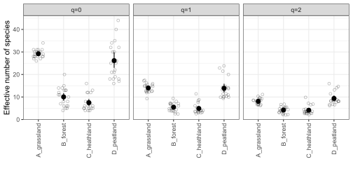
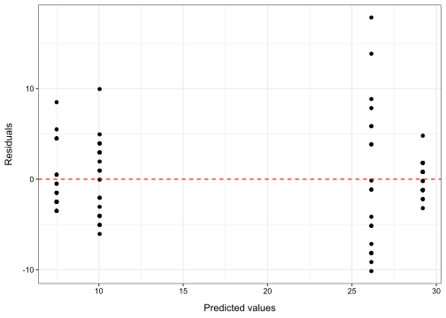
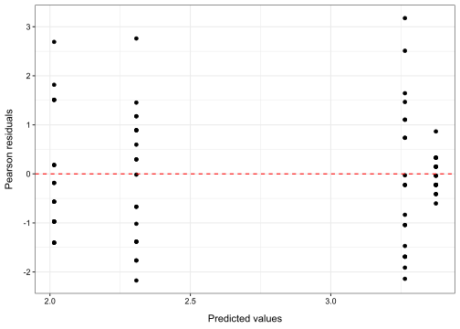
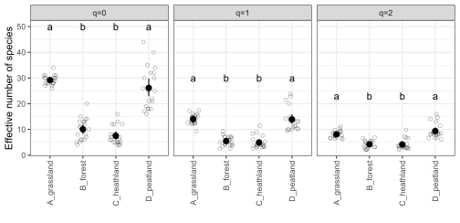
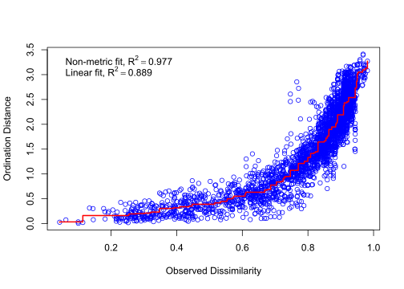
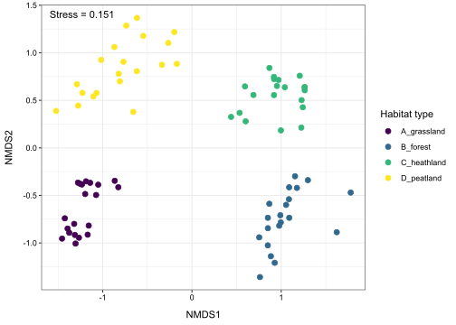

Code
library(tidyverse)
library(knitr)
library(vegan)
library(car)
library(emmeans)
library(viridis)Benjamin Delory ![]()
Welcome to this tutorial on data analysis in R!
In this tutorial, our goal is to review some of the R functions you will need to analyse the data you have collected in the field and answer your research questions. For this tutorial, we strongly recommend that you reflect on what you have learned in the Statistics GSS course during Period 3. The Statistics GSS course taught you many useful tools for data analysis. Now it’s time to put them into practice on a real ecological data set. For this tutorial, you will be using the same vegetation data as in the tutorial on data wrangling. If you don’t remember what these data are, please refer to the first sections of the first tutorial on data wrangling.
The focus of this tutorial will be on answering the following research questions:
In the first exercise, we will test if different habitat types around Utrecht (grassland, forest, heathland, peatland) harbor different levels of plant species diversity.
In the second exercise, we will visualize the differences in plant species composition between the different habitats.
Let’s get started!
library(tidyverse)
library(knitr)
library(vegan)
library(car)
library(emmeans)
library(viridis)You can download the data manually (either from Brightspace or from GitHub), but you can also import the data directly from Github using an R function called read_csv(). Let’s give it a try.
#URL to access the data
url <- "https://raw.github.com/BenjaminDelory/GEO2-2439/master/Data/data_vegetation.csv"
#Import data in R
data <- readr::read_csv(url)You can see that the dataset consists of a number of observations (rows) of 7 variables (columns). These variables are:
Before carrying out any statistical analysis, we first need to get to know our data. The best way to do this is to represent them graphically. That’s precisely what we are going to do next, but first we need to organize our data in such a way that we can represent plant species diversity (calculated using Hill numbers, see the tutorial on quantifying biodiversity) in different habitat types.
For the moment, the data set consists of numerous individual observations made by different students at different sites on four different dates… This is a lot of information, and we first need to summarize it by calculating the average cover of each plant species in a plot (i.e. across all students and all observation dates).
Note that it would also have been possible to plot the results separately for each observation date, but for simplicity’s sake we won’t dwell on this temporal aspect in this tutorial.
The first step is to write R code to do the following:
Create a new object called data_plot in which the reorganized data will be stored.
Remove all observations related to “Deadwood”, “Bare_ground” or “Litter” (you can do this using filter()).
Group data by Site, Plot, and Species (you can do this using group_by()). We will deliberately ignore the Location variable in this tutorial (despite the fact that there may be small differences in species composition and diversity between locations).
Calculate an average cover value for each unique combination of Site, Location, Plot, and Species (you can do this using summarize()).
Convert Site as a factor (you can do this using mutate()).
When this is done, use pivot_wider() to create as many new columns as there are species in the data. These columns should contain the average cover value for each species measured in all plots. Make sure that, if a species is not present in a plot, the percent cover of that species is zero in that plot.
data_plot <- data |>
filter(Species != "Deadwood") |>
filter(Species != "Bare_ground") |>
filter(Species != "Litter") |>
group_by(Site, Plot, Species) |>
summarise(Avg_cover = mean(Cover)) |>
mutate(Site = as.factor(Site)) |>
pivot_wider(names_from = Species,
values_from = Avg_cover,
values_fill = 0)
kable(head(data_plot, 10))| Site | Plot | Acer_pseudoplatanus | Achillea_millefolium | Anthoxanthum_odoratum | Bellis_perennis | Cardamine_pratensis | Cerastium_arvense | Cerastium_holosteoides | Crepis_biennis | Galium_mollugo | Geranium_molle | Glechoma_hederacea | Grasses | Hypochaeris_radicata | Jocabaea_vulgaris | Lamium_purpureum | Leucanthemum_vulgare | Lotus_corniculatus | Mosses | Onobrychis_viciifolia | Plantago_lanceolata | Ranunculus_acris | Ranunculus_bulbosus | Rhinanthus_angustifolius | Rumex_acetosa | Rumex_acetosella | Sanguisorba_minor | Taraxacum_sp | Trifolium_dubium | Trifolium_pratense | Trifolium_sp | Veronica_sp | Arenaria_serpyllifolia | Leontodon_hispidus | Ranunculus_repens | Crataegus_monogyna | Prunella_vulgaris | Dactylis_glomerata | Erodium_cicutarium | Fagus_sylvatica | Hypericum_tetrapterum | Trifolium_repens | Rubus_sp | Vaccinium_myrtillus | Potentilla_reptans | Rubus_caesius | Capsella_bursa-pastoris | Cirsium_sp | Convolvulus_arvensis | Draba_verna | Eryngium_campestre | Eryngium_planum | Myosotis_sp | Tanacetum_vulgare | Vicia_lathyroides | Vicia_sativa | Vicia_sp | Vinca_minor | Chamaemelum_nobile | Geranium_pusillum | Pimpinella_saxifraga | Urtica_dioica | Carduus_sp | Carex_sp | Raphanus_raphanistrum | Sonchus_asper | Vicia_hirsuta | Amelanchier_lamarckii | Aronia_sp | Athyrium_sp | Betula_pendula | Dryopteris_sp | Ferns | Frangula_alnus | Ilex_aquifolium | Picea_abies | Pinus_sylvestris | Prunus_serotina | Sorbus_aucuparia | Pseudotsuga_menziesii | Quercus_robur | Quercus_sp | Quercus_ilex | Quercus_petraea | Quercus_rubra | Digitalis_purpurea | Calluna_vulgaris | Erica_tetralix | Juncus_sp | Molinia_caerulea | Persicaria_minor | Deschampsia_cespitosa | Rubus_fruticosus | Acorus_calamus | Caltha_palustris | Equisetum_arvense | Equisetum_fluviatile | Iris_pseudacorus | Lysimachia_thyrsiflora | Mentha_aquatica | Rumex_hydrolapathum | Salix_sp | Sparganium_erectum | Epilobium_hirsutum | Lotus_pedunculatus | Lycopus_europaeus | Alnus_glutinosa | Betula_sp | Drosera_rotundifolia | Holcus_lanatus | Lysimachia_vulgaris | Angelica_archangelica | Rumex_sp | Equisetum_palustre | Lythrum_salicaria | Alisma_plantago-aquatica | Veronica_scutellata | Comarum_palustre | Calystegia_sepium | Ajuga_reptans | Dactylorhiza_sp | Ficaria_verna | Luzula_campestris | Onopordum_acanthium | Pilosella_sp | Scorzoneroides_autumnalis | Silene_flos-cuculi | Vicia_cracca | Galium_palustre | Ranunculus_sp | Myrica_gale |
|---|---|---|---|---|---|---|---|---|---|---|---|---|---|---|---|---|---|---|---|---|---|---|---|---|---|---|---|---|---|---|---|---|---|---|---|---|---|---|---|---|---|---|---|---|---|---|---|---|---|---|---|---|---|---|---|---|---|---|---|---|---|---|---|---|---|---|---|---|---|---|---|---|---|---|---|---|---|---|---|---|---|---|---|---|---|---|---|---|---|---|---|---|---|---|---|---|---|---|---|---|---|---|---|---|---|---|---|---|---|---|---|---|---|---|---|---|---|---|---|---|---|---|---|---|---|---|---|---|---|---|---|
| A_grassland | 1 | 2.045000 | 3.002857 | 1.673333 | 0.6177778 | 0.03 | 2.5050000 | 2.645455 | 4.971563 | 1.6666667 | 10.0000 | 5.000 | 26.80857 | 5.014286 | 1.881250 | 1 | 10.5772500 | 7.959545 | 44.78750 | 4.333333 | 2.556944 | 5.941935 | 0.1 | 1.333333 | 6.789844 | 5.000000 | 16.420000 | 9.662286 | 5.010909 | 5.152143 | 7.333333 | 1.5166667 | 0.000000 | 0.000 | 0.000 | 0.000 | 0.0 | 0 | 0 | 0.0 | 0.00 | 0.0 | 0.00 | 0 | 0 | 0.00 | 0 | 0 | 0 | 0 | 0 | 0 | 0 | 0 | 0 | 0 | 0 | 0 | 0 | 0 | 0 | 0 | 0 | 0 | 0 | 0 | 0 | 0 | 0 | 0 | 0 | 0 | 0 | 0 | 0 | 0 | 0 | 0 | 0 | 0 | 0 | 0 | 0 | 0 | 0 | 0 | 0 | 0 | 0 | 0 | 0 | 0 | 0 | 0 | 0 | 0 | 0 | 0 | 0 | 0 | 0 | 0 | 0 | 0 | 0 | 0 | 0 | 0 | 0 | 0 | 0 | 0 | 0 | 0 | 0 | 0 | 0 | 0 | 0 | 0 | 0 | 0 | 0 | 0 | 0 | 0 | 0 | 0 | 0 | 0 | 0 |
| A_grassland | 2 | 1.944706 | 5.026923 | 3.000000 | 0.0000000 | 0.00 | 0.9600000 | 2.553947 | 3.428571 | 0.8585714 | 0.0000 | 2.575 | 23.08333 | 10.847059 | 5.736111 | 10 | 1.5742857 | 8.385714 | 53.16216 | 0.000000 | 1.956818 | 4.705000 | 0.0 | 1.000000 | 6.587059 | 6.000000 | 16.556944 | 7.575000 | 6.093846 | 3.362143 | 7.666667 | 2.0500000 | 6.256250 | 5.000 | 5.050 | 0.000 | 0.0 | 0 | 0 | 0.0 | 0.00 | 0.0 | 0.00 | 0 | 0 | 0.00 | 0 | 0 | 0 | 0 | 0 | 0 | 0 | 0 | 0 | 0 | 0 | 0 | 0 | 0 | 0 | 0 | 0 | 0 | 0 | 0 | 0 | 0 | 0 | 0 | 0 | 0 | 0 | 0 | 0 | 0 | 0 | 0 | 0 | 0 | 0 | 0 | 0 | 0 | 0 | 0 | 0 | 0 | 0 | 0 | 0 | 0 | 0 | 0 | 0 | 0 | 0 | 0 | 0 | 0 | 0 | 0 | 0 | 0 | 0 | 0 | 0 | 0 | 0 | 0 | 0 | 0 | 0 | 0 | 0 | 0 | 0 | 0 | 0 | 0 | 0 | 0 | 0 | 0 | 0 | 0 | 0 | 0 | 0 | 0 | 0 |
| A_grassland | 3 | 2.315000 | 2.222222 | 2.510000 | 1.5865500 | 1.50 | 2.8000000 | 3.972812 | 1.295000 | 0.0000000 | 8.0175 | 1.000 | 14.81042 | 4.819091 | 3.643182 | 0 | 5.1177778 | 13.309259 | 64.30811 | 0.000000 | 2.334630 | 10.955588 | 0.0 | 0.800000 | 5.938000 | 4.000000 | 17.465263 | 7.594828 | 2.000000 | 1.053000 | 5.000000 | 1.0110000 | 3.000000 | 0.000 | 5.050 | 0.505 | 0.5 | 0 | 0 | 0.0 | 0.00 | 0.0 | 0.00 | 0 | 0 | 0.00 | 0 | 0 | 0 | 0 | 0 | 0 | 0 | 0 | 0 | 0 | 0 | 0 | 0 | 0 | 0 | 0 | 0 | 0 | 0 | 0 | 0 | 0 | 0 | 0 | 0 | 0 | 0 | 0 | 0 | 0 | 0 | 0 | 0 | 0 | 0 | 0 | 0 | 0 | 0 | 0 | 0 | 0 | 0 | 0 | 0 | 0 | 0 | 0 | 0 | 0 | 0 | 0 | 0 | 0 | 0 | 0 | 0 | 0 | 0 | 0 | 0 | 0 | 0 | 0 | 0 | 0 | 0 | 0 | 0 | 0 | 0 | 0 | 0 | 0 | 0 | 0 | 0 | 0 | 0 | 0 | 0 | 0 | 0 | 0 | 0 |
| A_grassland | 4 | 5.237059 | 1.000000 | 0.000000 | 1.0014286 | 0.00 | 2.0500000 | 2.790611 | 2.432857 | 0.6683333 | 0.0000 | 0.000 | 19.79394 | 9.705385 | 6.101875 | 1 | 0.0000000 | 9.483333 | 58.77143 | 0.000000 | 2.897857 | 3.778462 | 0.0 | 2.251667 | 3.500000 | 5.000000 | 14.704286 | 7.526191 | 6.001429 | 6.000000 | 10.000000 | 1.1814286 | 9.340000 | 7.575 | 0.505 | 0.000 | 0.0 | 1 | 10 | 0.5 | 0.05 | 0.0 | 0.00 | 0 | 0 | 0.00 | 0 | 0 | 0 | 0 | 0 | 0 | 0 | 0 | 0 | 0 | 0 | 0 | 0 | 0 | 0 | 0 | 0 | 0 | 0 | 0 | 0 | 0 | 0 | 0 | 0 | 0 | 0 | 0 | 0 | 0 | 0 | 0 | 0 | 0 | 0 | 0 | 0 | 0 | 0 | 0 | 0 | 0 | 0 | 0 | 0 | 0 | 0 | 0 | 0 | 0 | 0 | 0 | 0 | 0 | 0 | 0 | 0 | 0 | 0 | 0 | 0 | 0 | 0 | 0 | 0 | 0 | 0 | 0 | 0 | 0 | 0 | 0 | 0 | 0 | 0 | 0 | 0 | 0 | 0 | 0 | 0 | 0 | 0 | 0 | 0 |
| A_grassland | 5 | 1.832500 | 3.850000 | 2.525000 | 3.3333333 | 0.00 | 0.5583333 | 3.729091 | 1.200000 | 0.0000000 | 1.0000 | 0.050 | 21.17143 | 9.082857 | 6.462222 | 0 | 0.0000000 | 7.100000 | 58.43714 | 0.000000 | 2.508333 | 1.224500 | 0.0 | 1.572857 | 3.812500 | 0.000000 | 11.365714 | 6.401333 | 4.183333 | 11.000000 | 10.000000 | 0.8441667 | 9.097273 | 10.500 | 0.000 | 1.670 | 0.0 | 3 | 0 | 0.0 | 0.00 | 1.5 | 0.00 | 0 | 0 | 0.00 | 0 | 0 | 0 | 0 | 0 | 0 | 0 | 0 | 0 | 0 | 0 | 0 | 0 | 0 | 0 | 0 | 0 | 0 | 0 | 0 | 0 | 0 | 0 | 0 | 0 | 0 | 0 | 0 | 0 | 0 | 0 | 0 | 0 | 0 | 0 | 0 | 0 | 0 | 0 | 0 | 0 | 0 | 0 | 0 | 0 | 0 | 0 | 0 | 0 | 0 | 0 | 0 | 0 | 0 | 0 | 0 | 0 | 0 | 0 | 0 | 0 | 0 | 0 | 0 | 0 | 0 | 0 | 0 | 0 | 0 | 0 | 0 | 0 | 0 | 0 | 0 | 0 | 0 | 0 | 0 | 0 | 0 | 0 | 0 | 0 |
| A_grassland | 6 | 3.342778 | 5.909167 | 4.025000 | 1.5823077 | 0.00 | 1.3500000 | 1.333333 | 0.202000 | 0.0000000 | 0.0000 | 0.100 | 42.07297 | 5.938750 | 5.510000 | 0 | 3.0990625 | 6.334000 | 44.78784 | 0.000000 | 4.007812 | 3.553065 | 0.5 | 2.377500 | 3.415909 | 3.000000 | 14.868919 | 6.523448 | 6.916667 | 4.250000 | 2.333333 | 2.2788889 | 1.000000 | 0.000 | 0.000 | 0.000 | 0.0 | 0 | 0 | 0.0 | 0.00 | 0.0 | 0.00 | 0 | 0 | 0.00 | 0 | 0 | 0 | 0 | 0 | 0 | 0 | 0 | 0 | 0 | 0 | 0 | 0 | 0 | 0 | 0 | 0 | 0 | 0 | 0 | 0 | 0 | 0 | 0 | 0 | 0 | 0 | 0 | 0 | 0 | 0 | 0 | 0 | 0 | 0 | 0 | 0 | 0 | 0 | 0 | 0 | 0 | 0 | 0 | 0 | 0 | 0 | 0 | 0 | 0 | 0 | 0 | 0 | 0 | 0 | 0 | 0 | 0 | 0 | 0 | 0 | 0 | 0 | 0 | 0 | 0 | 0 | 0 | 0 | 0 | 0 | 0 | 0 | 0 | 0 | 0 | 0 | 0 | 0 | 0 | 0 | 0 | 0 | 0 | 0 |
| A_grassland | 7 | 2.900333 | 7.875000 | 0.000000 | 1.6125312 | 0.00 | 1.0000000 | 1.142857 | 1.388889 | 0.0000000 | 0.0000 | 1.000 | 40.47273 | 8.000000 | 9.358823 | 0 | 0.0000000 | 4.588235 | 52.01714 | 0.000000 | 6.194231 | 2.420667 | 0.3 | 2.781250 | 6.293793 | 5.500000 | 9.031250 | 6.001613 | 8.700000 | 4.250000 | 2.333333 | 1.3888889 | 2.250000 | 1.010 | 0.000 | 0.000 | 0.0 | 0 | 0 | 0.0 | 0.00 | 0.0 | 2.00 | 1 | 0 | 0.00 | 0 | 0 | 0 | 0 | 0 | 0 | 0 | 0 | 0 | 0 | 0 | 0 | 0 | 0 | 0 | 0 | 0 | 0 | 0 | 0 | 0 | 0 | 0 | 0 | 0 | 0 | 0 | 0 | 0 | 0 | 0 | 0 | 0 | 0 | 0 | 0 | 0 | 0 | 0 | 0 | 0 | 0 | 0 | 0 | 0 | 0 | 0 | 0 | 0 | 0 | 0 | 0 | 0 | 0 | 0 | 0 | 0 | 0 | 0 | 0 | 0 | 0 | 0 | 0 | 0 | 0 | 0 | 0 | 0 | 0 | 0 | 0 | 0 | 0 | 0 | 0 | 0 | 0 | 0 | 0 | 0 | 0 | 0 | 0 | 0 |
| A_grassland | 8 | 3.334167 | 3.500000 | 3.000000 | 1.0500000 | 0.00 | 3.2500000 | 3.958333 | 1.093077 | 0.0000000 | 10.0000 | 2.050 | 48.40968 | 4.500000 | 8.841667 | 0 | 3.1428571 | 13.623810 | 47.19667 | 0.000000 | 8.480435 | 13.842903 | 1.0 | 1.000000 | 5.180345 | 3.500000 | 8.282500 | 4.532419 | 8.250000 | 1.666667 | 3.333333 | 3.6000000 | 4.333333 | 0.000 | 10.000 | 0.000 | 0.0 | 1 | 0 | 0.0 | 0.00 | 0.0 | 0.00 | 0 | 0 | 0.00 | 0 | 0 | 0 | 0 | 0 | 0 | 0 | 0 | 0 | 0 | 0 | 0 | 0 | 0 | 0 | 0 | 0 | 0 | 0 | 0 | 0 | 0 | 0 | 0 | 0 | 0 | 0 | 0 | 0 | 0 | 0 | 0 | 0 | 0 | 0 | 0 | 0 | 0 | 0 | 0 | 0 | 0 | 0 | 0 | 0 | 0 | 0 | 0 | 0 | 0 | 0 | 0 | 0 | 0 | 0 | 0 | 0 | 0 | 0 | 0 | 0 | 0 | 0 | 0 | 0 | 0 | 0 | 0 | 0 | 0 | 0 | 0 | 0 | 0 | 0 | 0 | 0 | 0 | 0 | 0 | 0 | 0 | 0 | 0 | 0 |
| A_grassland | 9 | 2.201000 | 4.388462 | 5.000000 | 1.6666667 | 0.00 | 2.1428571 | 3.210000 | 1.251250 | 0.0000000 | 0.0000 | 4.000 | 40.14000 | 5.315385 | 7.012500 | 0 | 3.9406250 | 10.959091 | 52.56000 | 0.000000 | 1.833333 | 10.713529 | 1.0 | 1.577692 | 2.052931 | 1.666667 | 7.979412 | 5.705227 | 2.791429 | 2.000000 | 1.000000 | 0.7016667 | 7.000000 | 7.575 | 0.000 | 0.000 | 0.0 | 5 | 0 | 0.0 | 0.00 | 0.0 | 0.00 | 0 | 15 | 0.00 | 0 | 0 | 0 | 0 | 0 | 0 | 0 | 0 | 0 | 0 | 0 | 0 | 0 | 0 | 0 | 0 | 0 | 0 | 0 | 0 | 0 | 0 | 0 | 0 | 0 | 0 | 0 | 0 | 0 | 0 | 0 | 0 | 0 | 0 | 0 | 0 | 0 | 0 | 0 | 0 | 0 | 0 | 0 | 0 | 0 | 0 | 0 | 0 | 0 | 0 | 0 | 0 | 0 | 0 | 0 | 0 | 0 | 0 | 0 | 0 | 0 | 0 | 0 | 0 | 0 | 0 | 0 | 0 | 0 | 0 | 0 | 0 | 0 | 0 | 0 | 0 | 0 | 0 | 0 | 0 | 0 | 0 | 0 | 0 | 0 |
| A_grassland | 10 | 2.274545 | 7.003077 | 1.525000 | 3.2026667 | 0.00 | 2.3500000 | 3.820454 | 2.781538 | 0.0000000 | 1.0000 | 1.525 | 24.75161 | 3.785556 | 0.020000 | 0 | 0.8585714 | 14.330400 | 51.12121 | 0.000000 | 4.833889 | 15.638125 | 2.0 | 1.250000 | 2.000000 | 4.000000 | 9.190000 | 6.314375 | 4.172222 | 3.000000 | 1.333333 | 2.9387500 | 4.563750 | 0.010 | 0.100 | 1.000 | 0.0 | 1 | 0 | 0.0 | 0.00 | 0.0 | 1.75 | 0 | 0 | 0.01 | 0 | 0 | 0 | 0 | 0 | 0 | 0 | 0 | 0 | 0 | 0 | 0 | 0 | 0 | 0 | 0 | 0 | 0 | 0 | 0 | 0 | 0 | 0 | 0 | 0 | 0 | 0 | 0 | 0 | 0 | 0 | 0 | 0 | 0 | 0 | 0 | 0 | 0 | 0 | 0 | 0 | 0 | 0 | 0 | 0 | 0 | 0 | 0 | 0 | 0 | 0 | 0 | 0 | 0 | 0 | 0 | 0 | 0 | 0 | 0 | 0 | 0 | 0 | 0 | 0 | 0 | 0 | 0 | 0 | 0 | 0 | 0 | 0 | 0 | 0 | 0 | 0 | 0 | 0 | 0 | 0 | 0 | 0 | 0 | 0 |
The result is a data set comprising 80 rows (one row per plot) and 132 variables (including 130 species).
We are ready to go!
Since we are interested in modelling the relationship between plant species diversity and habitat type, we first need to quantify plant species diversity in all plots. We will do this using Hill numbers (see tutorial on quantifying taxonomic diversity if you need to refresh your memory). To do this, we first need to calculate the relative abundance of all species in all plots. The simplest way to do this is to create a new column called Total in the dataset by summing the percent cover value of all species present in each plot, and then use this information to express all species data in relative form.
#Create a new column called "Total"
data_plot <- data_plot |>
mutate(Total = sum(c_across(Acer_pseudoplatanus:Myrica_gale)))We can now reorganize the data into a more tidy format using the pivot_longer() function. What we want is a data set whose structure is similar to that of our original data, but with an extra column (Total). Since we have added several observations with zero values (which happens when a species is not present in a plot), we will end up with a dataset with many more rows than in our original data. But this does not matter, as we can easily filter out these values using filter().
#Reorganise data (tidy format) and filter out zero values
data_plot <- data_plot |>
pivot_longer(cols = Acer_pseudoplatanus:Myrica_gale,
names_to = "Species",
values_to = "Abundance") |>
filter(Abundance > 0)The next step is to calculate the relative abundance of each species in all plots by dividing Abundance by Total. We will store these relative abundance values in a new column: Rel_abundance.
#Calculate species relative abundance
data_plot <- data_plot |>
mutate(Rel_abundance = Abundance/Total)We are now ready to calculate Hill numbers. We will do this for three values of q (0, 1, and 2). We can easily do this using group_by() and summarise(). Let’s store this data set into a new R object called data_hill.
#Calculate Hill numbers at q=0, q=1, and q=2
data_hill <- data_plot |>
group_by(Site, Plot) |>
summarise(q0=sum(Rel_abundance^0)^(1/(1-0)),
q1=exp(-sum(Rel_abundance*log(Rel_abundance))),
q2=sum(Rel_abundance^2)^(1/(1-2)))This new dataset consists of 80 rows (one row per plot) and 5 variables:
Site: the site name (4 levels: A_grassland, B_forest, C_heathland, D_peatland)
Plot: the plot ID number (in each site, plots were labelled from 1 to 20)
q0: the effective number of species at q=0 (species richness)
q1: the effective number of species at q=1 (Hill-Shannon)
q2: the effective number of species at q=2 (Hill-Simpson)
To make it easier to plot the data for multiple values of q, let’s reorganise the dataset to have all values of q stored in a single column. We will store this new data set in a new R object called data_hill_long.
Use pivot_longer() to reorganise the dataset and create a column called q to store all diversity order values (0, 1, and 2) and a column called diversity to store the effective number of species in each community. In pivot_longer(), you will need to use two extra arguments: names_prefix = "q" (this will make sure to remove the letter “q” from “q0”, “q1”, and “q2”) and names_transform = as.numeric (to convert “0”, “1” and “2” into numeric values).
#Reorganise data ina tidy format
data_hill_long <- data_hill |>
pivot_longer(q0:q2,
names_to = "q",
names_prefix = "q",
names_transform = as.numeric,
values_to = "diversity")
kable(head(data_hill_long, 10))| Site | Plot | q | diversity |
|---|---|---|---|
| A_grassland | 1 | 0 | 31.000000 |
| A_grassland | 1 | 1 | 17.445157 |
| A_grassland | 1 | 2 | 11.126727 |
| A_grassland | 2 | 0 | 29.000000 |
| A_grassland | 2 | 1 | 17.182924 |
| A_grassland | 2 | 2 | 10.343752 |
| A_grassland | 3 | 0 | 31.000000 |
| A_grassland | 3 | 1 | 14.579505 |
| A_grassland | 3 | 2 | 7.561599 |
| A_grassland | 4 | 0 | 31.000000 |
Before fitting a statistical model to our data, let’s first create a plot to help us answer our research question: Does plant species diversity change with habitat type?
This research question gives us important information about what needs to be represented. The question tells us that our graph should present data on plant species diversity (diversity) as a function of habitat type (Site). As we have calculated plant diversity for three diversity orders (q=0, q=1 and q=2), it makes sense to create a panel for each value of q.
Let’s create our plot!
Using what you have learned in the previous tutorials, create a high-quality figure that answers the research question. Feel free to personalize your plot in any way you think best communicates the results (you do not necessarily have to produce the same plot as below).
#Add "q=" in front of diversity order values
data_hill_long$q <- paste("q=", data_hill_long$q, sep = "")
#Plot the data
ggplot(data_hill_long,
aes(x = Site,
y = diversity))+
geom_jitter(shape = 1,
alpha = 0.3,
height = 0,
width = 0.2)+
stat_summary(fun.data = "mean_cl_boot")+
theme_bw()+
xlab("")+
ylab("Effective number of species")+
facet_wrap(~q, ncol=3)+
theme(axis.text.x = element_text(angle=90,
vjust = 0.5,
hjust = 1))+
scale_colour_viridis(discrete = TRUE)
What can you already notice from this graph?
Does it look like ANOVA (ANalysis Of VAriance) assumptions are met?
Let’s fit a statistical model to study the relationship between our response variable of interest (Plant species diversity at different values of q) and our two experimental factors (Site and Location). There are different ways to do this in R. First, let’s check whether a simple linear regression model can correctly model our data. We will use the lm() function to fit this linear model (this will give us the same results as the aov() function). Note that each group being compared has 10 independent observations, which is not sufficient to test the assumption that the data are normally distributed at each combination of factor levels.
The syntax to fit a simple linear regression model with two predictor variables in R is as follows:
model <- lm(Response ~ Predictor1*Predictor2, data)
The asterisks (*) means that we want to take the interaction between predictor variables into account (you then assume that Predictor1 and Predictor2 have non-additive effects on your response variable). Using a plus sign (+) instead of an asterisks would fit a model without considering an interaction between predictors (in that case, you then assume that Predictor1 and Predictor2 have additive effects on your response variable).
Let’s fit a linear model to plant diversity data at q=0 (i.e., species richness) using Site as an explanatory variable.
#Fit simple linear regression model
#Only consider q=0 for now
model1 <- lm(q0 ~ Site,
data = data_hill)Before checking model results, let’s first make sure that model assumptions are met. We can check for homoscedasticity by plotting model residuals (i.e., the difference between model predictions and observations) against fitted values (i.e., model predictions). This is called a residual plot. Fitted values can be calculated using predict(). Residuals can be calculated using residuals(). Try to create such a plot using what you have learned in previous tutorials. Do you notice any pattern in this residual plot?
plot <- data.frame(predicted = predict(model1),
residuals = residuals(model1)) |>
ggplot(aes(x=predicted,
y=residuals))+
geom_point()+
geom_hline(yintercept = 0,
colour = "red",
linetype = 2)+
theme_bw()+
xlab("Predicted values")+
ylab("Residuals")+
theme(axis.title.x = element_text(margin = margin(t=10)),
axis.title.y = element_text(margin = margin(r=10)),
axis.text = element_text(colour="black"))plot
It seems that there is a strong mean - variance relationship in our data (heteroscedasticity), which means that the model we just fitted is not the best option. A better approach is to switch to a generalised linear model (also referred to as GLM). Generalised linear models can be fitted using the glm() function in the stats package. The syntax is exactly the same as for the lm() function, but there is an extra argument to specify: family. The family argument allows you to describe the error distribution and the link function to be used in the model.
lm() and glm()
A simple linear regression model (lm()) is a special case of a gaussian generalised linear model with an identity link. This means that
lm(Response ~ Predictor1*Predictor2, data)
and
glm(Response ~ Predictor1*Predictor2, data, family=gaussian(link="identity")
produce the same results.
In the context of this course, two types of distribution are of interest to us:
The Poisson distribution to model count data (e.g., plant diversity at q=0). A Poisson distribution is characterized by the fact that its mean and variance are equal. In reality, cases of overdispersion (where the variance is greater than the mean) are frequent in ecological data. One way of solving this problem is to use a quasi-Poisson distribution, which corrects for overdispersion by estimating an overdispersion parameter (it assumes that the variance is a linear function of the mean). Using a log link function will also help deal with heteroscedasticity. This can be done by writing family=quasipoisson(link="log") in glm().
The Gamma distribution to model continuous and strictly positive data (e.g., plant diversity at q=1 and q=2). Negative values and zeros are not allowed with a gamma distribution. This distribution is useful to model variables such as biomass, length, etc. Using a log link function will also help deal with heteroscedasticity. This can be done by writing family=Gamma(link="log") in glm().
Let’s fit a new model (this time a GLM) to our species richness data (q=0).
#Fit a generalised linear model with a quasipoisson distribution
model2 <- glm(q0 ~ Site,
data = data_hill,
family = quasipoisson(link="log"))Before checking model results, let’s first create a residual plot. What do you notice? What’s new in this residual plot?
plot <- data.frame(predicted = predict(model2),
residuals = residuals(model2)) |>
ggplot(aes(x=predicted,
y=residuals))+
geom_point()+
geom_hline(yintercept = 0,
colour = "red",
linetype = 2)+
theme_bw()+
xlab("Predicted values")+
ylab("Pearson residuals")+
theme(axis.title.x = element_text(margin = margin(t=10)),
axis.title.y = element_text(margin = margin(r=10)),
axis.text = element_text(colour="black"))plot
Let’s now take a look at model outputs. You can do this using summary(). This output contains a wealth of useful information. The coefficient table gives you the coefficients of the model. When looking at the results of the statistical tests, it seems that most of the coefficients in the equation above can be considered significantly different from zero (marked with a dot or an asterisks).
output <- summary(model2)output
Call:
glm(formula = q0 ~ Site, family = quasipoisson(link = "log"),
data = data_hill)
Coefficients:
Estimate Std. Error t value Pr(>|t|)
(Intercept) 3.37417 0.05117 65.938 <2e-16 ***
SiteB_forest -1.06660 0.10113 -10.547 <2e-16 ***
SiteC_heathland -1.35927 0.11320 -12.008 <2e-16 ***
SiteD_peatland -0.11032 0.07445 -1.482 0.143
---
Signif. codes: 0 '***' 0.001 '**' 0.01 '*' 0.05 '.' 0.1 ' ' 1
(Dispersion parameter for quasipoisson family taken to be 1.529237)
Null deviance: 534.75 on 79 degrees of freedom
Residual deviance: 112.16 on 76 degrees of freedom
AIC: NA
Number of Fisher Scoring iterations: 4GLM models do not return any R² values (like for simple linear regression models). The closest we can get is to calculate the explained deviance:
\[ ExplainedDeviance = 100 \times \frac{NullDeviance - ResidualDeviance}{NullDeviance} \]
null_deviance <- summary(model2)$null.deviance
residual_deviance <- summary(model2)$deviance
explained_deviance <- 100*(null_deviance-residual_deviance)/null_devianceThe explanatory variables included in the model explain 79% of the variation in plant species richness (q=0).
You can use the Anova() function in the car package to produce an ANOVA table (in this case, an analysis of deviance table). This table shows that plant species richness strongly differs between sites.
table <- Anova(model2)tableAnalysis of Deviance Table (Type II tests)
Response: q0
LR Chisq Df Pr(>Chisq)
Site 276.33 3 < 2.2e-16 ***
---
Signif. codes: 0 '***' 0.001 '**' 0.01 '*' 0.05 '.' 0.1 ' ' 1To determine where the differences in plant species richness lie between the four different sites, we need to perform a posthoc test. The emmeans() function in the emmeans R package is a good option for this. For the emmeans() function, we will need to specify a value for the following arguments:
object (the object containing the fitted model)specs (a character vector specifying the names of the predictors for which levels must be compared). In this example, this is Site.by (a character vector specifying the names of the predictors to condition on). We will not need this argument in this case because our model has only one explanatory variable, but this argument is particularly useful if the model includes an interaction term between two explanatory variables.contr (a character value specifying the contrasts to be added). We will use pairwise contrasts (i.e., all possible pairs of groups will be compared).To check the results of the posthoc test, we will then call a summary() function on the object produced by emmeans() . In summary(), we will use the type argument to specify that we want model predictions to be on the same scale as the original data (not log scale, but original scale).
table <- summary(emmeans(object = model2,
specs = "Site",
contr = "pairwise"),
type="response")table$emmeans
Site rate SE df asymp.LCL asymp.UCL
A_grassland 29.2 1.494 Inf 26.41 32.28
B_forest 10.1 0.877 Inf 8.47 11.92
C_heathland 7.5 0.757 Inf 6.15 9.14
D_peatland 26.1 1.414 Inf 23.52 29.07
Confidence level used: 0.95
Intervals are back-transformed from the log scale
$contrasts
contrast ratio SE df null z.ratio p.value
A_grassland / B_forest 2.905 0.2938 Inf 1 10.547 <.0001
A_grassland / C_heathland 3.893 0.4407 Inf 1 12.008 <.0001
A_grassland / D_peatland 1.117 0.0831 Inf 1 1.482 0.4485
B_forest / C_heathland 1.340 0.1788 Inf 1 2.193 0.1250
B_forest / D_peatland 0.384 0.0394 Inf 1 -9.318 <.0001
C_heathland / D_peatland 0.287 0.0329 Inf 1 -10.904 <.0001
P value adjustment: tukey method for comparing a family of 4 estimates
Tests are performed on the log scale What can you conclude from this posthoc test?
You can repeat all steps 3 and 4 for plant species diversity at q=1 and q=2. The only difference will be that you will need to use a different distribution family to model the data (since the diversity values at q=1 and q=2 are continuous and strictly positive). A Gamma distribution should do the trick.
Give it a try!
We can add posthoc test results to a graph by adding annotations. This is often done by adding letters next to the groups being compared. Groups that do not share a common letter are considered statistically significantly different from each other (p < 0.05). We can easily add these letters to our graph in two steps:
Start by creating a data frame (called annotations in the code below) that contains all the information that ggplot2 needs to add the annotations to your graph. In our example, this data frame should have as many rows as annotations to add to the graph and must contain the following columns:
data_hill_long.data_hill_long.Once this is done, add an extra layer to your ggplot object using geom_text().
#Create table with annotations
annotations <- data.frame(Site=rep(unique(data_hill_long$Site), 3),
q=rep(unique(data_hill_long$q), each=4),
y=c(rep(50, 4),
rep(30, 4),
rep(23, 4)),
Label=c("a", "b", "b", "a",
"a", "b", "b", "a",
"a", "b", "b", "a"))
#Plot the data
ggplot(data_hill_long,
aes(x = Site,
y = diversity))+
geom_jitter(shape = 1,
alpha = 0.3,
height = 0,
width = 0.2)+
stat_summary(fun.data = "mean_cl_boot")+
theme_bw()+
xlab("")+
ylab("Effective number of species")+
facet_wrap(~q, ncol=3)+
theme(axis.text.x = element_text(angle=90,
vjust = 0.5,
hjust = 1))+
scale_colour_viridis(discrete = TRUE)+
geom_text(data=annotations,
aes(y=y,
x=Site,
label=Label))
Non-metric multidimensional scaling (NMDS) is a technique often used in ecological research to visualise differences (or (dis)similarities) in species composition between ecological communities.
The first step is to choose a measure of association and calculate a dissimilarity matrix. This dissimilarity matrix will have as many rows and columns as ecological communities to be compared. The help page of the vegdist() function of the vegan package lists a number of dissimilarity indices for ecologists wishing to quantify dissimilarity in species composition between communities. You can access this help page by running ?vegdist in your R console (a detailed discussion of the advantages and disadvantages of each dissimilarity index is beyond the scope of this tutorial). The Bray-Curtis dissimilarity is usually good at detecting ecological gradients (see ?vegdist) and is often used as default when performing NMDS. This is the dissimilarity index we are going to use in this tutorial too.
To obtain the dissimilarity matrix required for NMDS, we first need to reorganise our data so that each species has its own column and each ecological community has its own row (i.e., a site-by-species matrix). We already wrote the code to do this at the beginning of this tutorial.
data_nmds <- data |>
filter(Species != "Deadwood") |>
filter(Species != "Bare_ground") |>
filter(Species != "Litter") |>
group_by(Site, Plot, Species) |>
summarise(Avg_cover = mean(Cover)) |>
mutate(Site = as.factor(Site)) |>
pivot_wider(names_from = Species,
values_from = Avg_cover,
values_fill = 0)
kable(head(data_nmds, 10))| Site | Plot | Acer_pseudoplatanus | Achillea_millefolium | Anthoxanthum_odoratum | Bellis_perennis | Cardamine_pratensis | Cerastium_arvense | Cerastium_holosteoides | Crepis_biennis | Galium_mollugo | Geranium_molle | Glechoma_hederacea | Grasses | Hypochaeris_radicata | Jocabaea_vulgaris | Lamium_purpureum | Leucanthemum_vulgare | Lotus_corniculatus | Mosses | Onobrychis_viciifolia | Plantago_lanceolata | Ranunculus_acris | Ranunculus_bulbosus | Rhinanthus_angustifolius | Rumex_acetosa | Rumex_acetosella | Sanguisorba_minor | Taraxacum_sp | Trifolium_dubium | Trifolium_pratense | Trifolium_sp | Veronica_sp | Arenaria_serpyllifolia | Leontodon_hispidus | Ranunculus_repens | Crataegus_monogyna | Prunella_vulgaris | Dactylis_glomerata | Erodium_cicutarium | Fagus_sylvatica | Hypericum_tetrapterum | Trifolium_repens | Rubus_sp | Vaccinium_myrtillus | Potentilla_reptans | Rubus_caesius | Capsella_bursa-pastoris | Cirsium_sp | Convolvulus_arvensis | Draba_verna | Eryngium_campestre | Eryngium_planum | Myosotis_sp | Tanacetum_vulgare | Vicia_lathyroides | Vicia_sativa | Vicia_sp | Vinca_minor | Chamaemelum_nobile | Geranium_pusillum | Pimpinella_saxifraga | Urtica_dioica | Carduus_sp | Carex_sp | Raphanus_raphanistrum | Sonchus_asper | Vicia_hirsuta | Amelanchier_lamarckii | Aronia_sp | Athyrium_sp | Betula_pendula | Dryopteris_sp | Ferns | Frangula_alnus | Ilex_aquifolium | Picea_abies | Pinus_sylvestris | Prunus_serotina | Sorbus_aucuparia | Pseudotsuga_menziesii | Quercus_robur | Quercus_sp | Quercus_ilex | Quercus_petraea | Quercus_rubra | Digitalis_purpurea | Calluna_vulgaris | Erica_tetralix | Juncus_sp | Molinia_caerulea | Persicaria_minor | Deschampsia_cespitosa | Rubus_fruticosus | Acorus_calamus | Caltha_palustris | Equisetum_arvense | Equisetum_fluviatile | Iris_pseudacorus | Lysimachia_thyrsiflora | Mentha_aquatica | Rumex_hydrolapathum | Salix_sp | Sparganium_erectum | Epilobium_hirsutum | Lotus_pedunculatus | Lycopus_europaeus | Alnus_glutinosa | Betula_sp | Drosera_rotundifolia | Holcus_lanatus | Lysimachia_vulgaris | Angelica_archangelica | Rumex_sp | Equisetum_palustre | Lythrum_salicaria | Alisma_plantago-aquatica | Veronica_scutellata | Comarum_palustre | Calystegia_sepium | Ajuga_reptans | Dactylorhiza_sp | Ficaria_verna | Luzula_campestris | Onopordum_acanthium | Pilosella_sp | Scorzoneroides_autumnalis | Silene_flos-cuculi | Vicia_cracca | Galium_palustre | Ranunculus_sp | Myrica_gale |
|---|---|---|---|---|---|---|---|---|---|---|---|---|---|---|---|---|---|---|---|---|---|---|---|---|---|---|---|---|---|---|---|---|---|---|---|---|---|---|---|---|---|---|---|---|---|---|---|---|---|---|---|---|---|---|---|---|---|---|---|---|---|---|---|---|---|---|---|---|---|---|---|---|---|---|---|---|---|---|---|---|---|---|---|---|---|---|---|---|---|---|---|---|---|---|---|---|---|---|---|---|---|---|---|---|---|---|---|---|---|---|---|---|---|---|---|---|---|---|---|---|---|---|---|---|---|---|---|---|---|---|---|
| A_grassland | 1 | 2.045000 | 3.002857 | 1.673333 | 0.6177778 | 0.03 | 2.5050000 | 2.645455 | 4.971563 | 1.6666667 | 10.0000 | 5.000 | 26.80857 | 5.014286 | 1.881250 | 1 | 10.5772500 | 7.959545 | 44.78750 | 4.333333 | 2.556944 | 5.941935 | 0.1 | 1.333333 | 6.789844 | 5.000000 | 16.420000 | 9.662286 | 5.010909 | 5.152143 | 7.333333 | 1.5166667 | 0.000000 | 0.000 | 0.000 | 0.000 | 0.0 | 0 | 0 | 0.0 | 0.00 | 0.0 | 0.00 | 0 | 0 | 0.00 | 0 | 0 | 0 | 0 | 0 | 0 | 0 | 0 | 0 | 0 | 0 | 0 | 0 | 0 | 0 | 0 | 0 | 0 | 0 | 0 | 0 | 0 | 0 | 0 | 0 | 0 | 0 | 0 | 0 | 0 | 0 | 0 | 0 | 0 | 0 | 0 | 0 | 0 | 0 | 0 | 0 | 0 | 0 | 0 | 0 | 0 | 0 | 0 | 0 | 0 | 0 | 0 | 0 | 0 | 0 | 0 | 0 | 0 | 0 | 0 | 0 | 0 | 0 | 0 | 0 | 0 | 0 | 0 | 0 | 0 | 0 | 0 | 0 | 0 | 0 | 0 | 0 | 0 | 0 | 0 | 0 | 0 | 0 | 0 | 0 |
| A_grassland | 2 | 1.944706 | 5.026923 | 3.000000 | 0.0000000 | 0.00 | 0.9600000 | 2.553947 | 3.428571 | 0.8585714 | 0.0000 | 2.575 | 23.08333 | 10.847059 | 5.736111 | 10 | 1.5742857 | 8.385714 | 53.16216 | 0.000000 | 1.956818 | 4.705000 | 0.0 | 1.000000 | 6.587059 | 6.000000 | 16.556944 | 7.575000 | 6.093846 | 3.362143 | 7.666667 | 2.0500000 | 6.256250 | 5.000 | 5.050 | 0.000 | 0.0 | 0 | 0 | 0.0 | 0.00 | 0.0 | 0.00 | 0 | 0 | 0.00 | 0 | 0 | 0 | 0 | 0 | 0 | 0 | 0 | 0 | 0 | 0 | 0 | 0 | 0 | 0 | 0 | 0 | 0 | 0 | 0 | 0 | 0 | 0 | 0 | 0 | 0 | 0 | 0 | 0 | 0 | 0 | 0 | 0 | 0 | 0 | 0 | 0 | 0 | 0 | 0 | 0 | 0 | 0 | 0 | 0 | 0 | 0 | 0 | 0 | 0 | 0 | 0 | 0 | 0 | 0 | 0 | 0 | 0 | 0 | 0 | 0 | 0 | 0 | 0 | 0 | 0 | 0 | 0 | 0 | 0 | 0 | 0 | 0 | 0 | 0 | 0 | 0 | 0 | 0 | 0 | 0 | 0 | 0 | 0 | 0 |
| A_grassland | 3 | 2.315000 | 2.222222 | 2.510000 | 1.5865500 | 1.50 | 2.8000000 | 3.972812 | 1.295000 | 0.0000000 | 8.0175 | 1.000 | 14.81042 | 4.819091 | 3.643182 | 0 | 5.1177778 | 13.309259 | 64.30811 | 0.000000 | 2.334630 | 10.955588 | 0.0 | 0.800000 | 5.938000 | 4.000000 | 17.465263 | 7.594828 | 2.000000 | 1.053000 | 5.000000 | 1.0110000 | 3.000000 | 0.000 | 5.050 | 0.505 | 0.5 | 0 | 0 | 0.0 | 0.00 | 0.0 | 0.00 | 0 | 0 | 0.00 | 0 | 0 | 0 | 0 | 0 | 0 | 0 | 0 | 0 | 0 | 0 | 0 | 0 | 0 | 0 | 0 | 0 | 0 | 0 | 0 | 0 | 0 | 0 | 0 | 0 | 0 | 0 | 0 | 0 | 0 | 0 | 0 | 0 | 0 | 0 | 0 | 0 | 0 | 0 | 0 | 0 | 0 | 0 | 0 | 0 | 0 | 0 | 0 | 0 | 0 | 0 | 0 | 0 | 0 | 0 | 0 | 0 | 0 | 0 | 0 | 0 | 0 | 0 | 0 | 0 | 0 | 0 | 0 | 0 | 0 | 0 | 0 | 0 | 0 | 0 | 0 | 0 | 0 | 0 | 0 | 0 | 0 | 0 | 0 | 0 |
| A_grassland | 4 | 5.237059 | 1.000000 | 0.000000 | 1.0014286 | 0.00 | 2.0500000 | 2.790611 | 2.432857 | 0.6683333 | 0.0000 | 0.000 | 19.79394 | 9.705385 | 6.101875 | 1 | 0.0000000 | 9.483333 | 58.77143 | 0.000000 | 2.897857 | 3.778462 | 0.0 | 2.251667 | 3.500000 | 5.000000 | 14.704286 | 7.526191 | 6.001429 | 6.000000 | 10.000000 | 1.1814286 | 9.340000 | 7.575 | 0.505 | 0.000 | 0.0 | 1 | 10 | 0.5 | 0.05 | 0.0 | 0.00 | 0 | 0 | 0.00 | 0 | 0 | 0 | 0 | 0 | 0 | 0 | 0 | 0 | 0 | 0 | 0 | 0 | 0 | 0 | 0 | 0 | 0 | 0 | 0 | 0 | 0 | 0 | 0 | 0 | 0 | 0 | 0 | 0 | 0 | 0 | 0 | 0 | 0 | 0 | 0 | 0 | 0 | 0 | 0 | 0 | 0 | 0 | 0 | 0 | 0 | 0 | 0 | 0 | 0 | 0 | 0 | 0 | 0 | 0 | 0 | 0 | 0 | 0 | 0 | 0 | 0 | 0 | 0 | 0 | 0 | 0 | 0 | 0 | 0 | 0 | 0 | 0 | 0 | 0 | 0 | 0 | 0 | 0 | 0 | 0 | 0 | 0 | 0 | 0 |
| A_grassland | 5 | 1.832500 | 3.850000 | 2.525000 | 3.3333333 | 0.00 | 0.5583333 | 3.729091 | 1.200000 | 0.0000000 | 1.0000 | 0.050 | 21.17143 | 9.082857 | 6.462222 | 0 | 0.0000000 | 7.100000 | 58.43714 | 0.000000 | 2.508333 | 1.224500 | 0.0 | 1.572857 | 3.812500 | 0.000000 | 11.365714 | 6.401333 | 4.183333 | 11.000000 | 10.000000 | 0.8441667 | 9.097273 | 10.500 | 0.000 | 1.670 | 0.0 | 3 | 0 | 0.0 | 0.00 | 1.5 | 0.00 | 0 | 0 | 0.00 | 0 | 0 | 0 | 0 | 0 | 0 | 0 | 0 | 0 | 0 | 0 | 0 | 0 | 0 | 0 | 0 | 0 | 0 | 0 | 0 | 0 | 0 | 0 | 0 | 0 | 0 | 0 | 0 | 0 | 0 | 0 | 0 | 0 | 0 | 0 | 0 | 0 | 0 | 0 | 0 | 0 | 0 | 0 | 0 | 0 | 0 | 0 | 0 | 0 | 0 | 0 | 0 | 0 | 0 | 0 | 0 | 0 | 0 | 0 | 0 | 0 | 0 | 0 | 0 | 0 | 0 | 0 | 0 | 0 | 0 | 0 | 0 | 0 | 0 | 0 | 0 | 0 | 0 | 0 | 0 | 0 | 0 | 0 | 0 | 0 |
| A_grassland | 6 | 3.342778 | 5.909167 | 4.025000 | 1.5823077 | 0.00 | 1.3500000 | 1.333333 | 0.202000 | 0.0000000 | 0.0000 | 0.100 | 42.07297 | 5.938750 | 5.510000 | 0 | 3.0990625 | 6.334000 | 44.78784 | 0.000000 | 4.007812 | 3.553065 | 0.5 | 2.377500 | 3.415909 | 3.000000 | 14.868919 | 6.523448 | 6.916667 | 4.250000 | 2.333333 | 2.2788889 | 1.000000 | 0.000 | 0.000 | 0.000 | 0.0 | 0 | 0 | 0.0 | 0.00 | 0.0 | 0.00 | 0 | 0 | 0.00 | 0 | 0 | 0 | 0 | 0 | 0 | 0 | 0 | 0 | 0 | 0 | 0 | 0 | 0 | 0 | 0 | 0 | 0 | 0 | 0 | 0 | 0 | 0 | 0 | 0 | 0 | 0 | 0 | 0 | 0 | 0 | 0 | 0 | 0 | 0 | 0 | 0 | 0 | 0 | 0 | 0 | 0 | 0 | 0 | 0 | 0 | 0 | 0 | 0 | 0 | 0 | 0 | 0 | 0 | 0 | 0 | 0 | 0 | 0 | 0 | 0 | 0 | 0 | 0 | 0 | 0 | 0 | 0 | 0 | 0 | 0 | 0 | 0 | 0 | 0 | 0 | 0 | 0 | 0 | 0 | 0 | 0 | 0 | 0 | 0 |
| A_grassland | 7 | 2.900333 | 7.875000 | 0.000000 | 1.6125312 | 0.00 | 1.0000000 | 1.142857 | 1.388889 | 0.0000000 | 0.0000 | 1.000 | 40.47273 | 8.000000 | 9.358823 | 0 | 0.0000000 | 4.588235 | 52.01714 | 0.000000 | 6.194231 | 2.420667 | 0.3 | 2.781250 | 6.293793 | 5.500000 | 9.031250 | 6.001613 | 8.700000 | 4.250000 | 2.333333 | 1.3888889 | 2.250000 | 1.010 | 0.000 | 0.000 | 0.0 | 0 | 0 | 0.0 | 0.00 | 0.0 | 2.00 | 1 | 0 | 0.00 | 0 | 0 | 0 | 0 | 0 | 0 | 0 | 0 | 0 | 0 | 0 | 0 | 0 | 0 | 0 | 0 | 0 | 0 | 0 | 0 | 0 | 0 | 0 | 0 | 0 | 0 | 0 | 0 | 0 | 0 | 0 | 0 | 0 | 0 | 0 | 0 | 0 | 0 | 0 | 0 | 0 | 0 | 0 | 0 | 0 | 0 | 0 | 0 | 0 | 0 | 0 | 0 | 0 | 0 | 0 | 0 | 0 | 0 | 0 | 0 | 0 | 0 | 0 | 0 | 0 | 0 | 0 | 0 | 0 | 0 | 0 | 0 | 0 | 0 | 0 | 0 | 0 | 0 | 0 | 0 | 0 | 0 | 0 | 0 | 0 |
| A_grassland | 8 | 3.334167 | 3.500000 | 3.000000 | 1.0500000 | 0.00 | 3.2500000 | 3.958333 | 1.093077 | 0.0000000 | 10.0000 | 2.050 | 48.40968 | 4.500000 | 8.841667 | 0 | 3.1428571 | 13.623810 | 47.19667 | 0.000000 | 8.480435 | 13.842903 | 1.0 | 1.000000 | 5.180345 | 3.500000 | 8.282500 | 4.532419 | 8.250000 | 1.666667 | 3.333333 | 3.6000000 | 4.333333 | 0.000 | 10.000 | 0.000 | 0.0 | 1 | 0 | 0.0 | 0.00 | 0.0 | 0.00 | 0 | 0 | 0.00 | 0 | 0 | 0 | 0 | 0 | 0 | 0 | 0 | 0 | 0 | 0 | 0 | 0 | 0 | 0 | 0 | 0 | 0 | 0 | 0 | 0 | 0 | 0 | 0 | 0 | 0 | 0 | 0 | 0 | 0 | 0 | 0 | 0 | 0 | 0 | 0 | 0 | 0 | 0 | 0 | 0 | 0 | 0 | 0 | 0 | 0 | 0 | 0 | 0 | 0 | 0 | 0 | 0 | 0 | 0 | 0 | 0 | 0 | 0 | 0 | 0 | 0 | 0 | 0 | 0 | 0 | 0 | 0 | 0 | 0 | 0 | 0 | 0 | 0 | 0 | 0 | 0 | 0 | 0 | 0 | 0 | 0 | 0 | 0 | 0 |
| A_grassland | 9 | 2.201000 | 4.388462 | 5.000000 | 1.6666667 | 0.00 | 2.1428571 | 3.210000 | 1.251250 | 0.0000000 | 0.0000 | 4.000 | 40.14000 | 5.315385 | 7.012500 | 0 | 3.9406250 | 10.959091 | 52.56000 | 0.000000 | 1.833333 | 10.713529 | 1.0 | 1.577692 | 2.052931 | 1.666667 | 7.979412 | 5.705227 | 2.791429 | 2.000000 | 1.000000 | 0.7016667 | 7.000000 | 7.575 | 0.000 | 0.000 | 0.0 | 5 | 0 | 0.0 | 0.00 | 0.0 | 0.00 | 0 | 15 | 0.00 | 0 | 0 | 0 | 0 | 0 | 0 | 0 | 0 | 0 | 0 | 0 | 0 | 0 | 0 | 0 | 0 | 0 | 0 | 0 | 0 | 0 | 0 | 0 | 0 | 0 | 0 | 0 | 0 | 0 | 0 | 0 | 0 | 0 | 0 | 0 | 0 | 0 | 0 | 0 | 0 | 0 | 0 | 0 | 0 | 0 | 0 | 0 | 0 | 0 | 0 | 0 | 0 | 0 | 0 | 0 | 0 | 0 | 0 | 0 | 0 | 0 | 0 | 0 | 0 | 0 | 0 | 0 | 0 | 0 | 0 | 0 | 0 | 0 | 0 | 0 | 0 | 0 | 0 | 0 | 0 | 0 | 0 | 0 | 0 | 0 |
| A_grassland | 10 | 2.274545 | 7.003077 | 1.525000 | 3.2026667 | 0.00 | 2.3500000 | 3.820454 | 2.781538 | 0.0000000 | 1.0000 | 1.525 | 24.75161 | 3.785556 | 0.020000 | 0 | 0.8585714 | 14.330400 | 51.12121 | 0.000000 | 4.833889 | 15.638125 | 2.0 | 1.250000 | 2.000000 | 4.000000 | 9.190000 | 6.314375 | 4.172222 | 3.000000 | 1.333333 | 2.9387500 | 4.563750 | 0.010 | 0.100 | 1.000 | 0.0 | 1 | 0 | 0.0 | 0.00 | 0.0 | 1.75 | 0 | 0 | 0.01 | 0 | 0 | 0 | 0 | 0 | 0 | 0 | 0 | 0 | 0 | 0 | 0 | 0 | 0 | 0 | 0 | 0 | 0 | 0 | 0 | 0 | 0 | 0 | 0 | 0 | 0 | 0 | 0 | 0 | 0 | 0 | 0 | 0 | 0 | 0 | 0 | 0 | 0 | 0 | 0 | 0 | 0 | 0 | 0 | 0 | 0 | 0 | 0 | 0 | 0 | 0 | 0 | 0 | 0 | 0 | 0 | 0 | 0 | 0 | 0 | 0 | 0 | 0 | 0 | 0 | 0 | 0 | 0 | 0 | 0 | 0 | 0 | 0 | 0 | 0 | 0 | 0 | 0 | 0 | 0 | 0 | 0 | 0 | 0 | 0 |
Now that our community dataset has the right format, we can perform the NMDS using the metaMDS() function of the vegan package. The following arguments are of particular importance:
comm: the community data (only select the species columns).distance: a character value for the dissimilarity index used. Use distance="bray" for the Bray-Curtis dissimilarity index.k: the number of dimensions to compute. Let’s start with k=2 (we want to produce a 2D plot).trymax: the maximum number of random starts in search of a stable solution. The NMDS algorithm iteratively searches for a stable solution (numerical optimisation methods). Increasing the value of this argument can help reaching a stable solution.We will keep the default values for all other arguments. Store the results in an object named nmds. Do not forget to set a seed (using set.seed() for reproducibility).
set.seed(123)
nmds <- metaMDS(comm = data_nmds[,3:ncol(data_nmds)],
distance = "bray",
k = 2,
trymax = 1000)Square root transformation
Wisconsin double standardization
Run 0 stress 0.1512294
Run 1 stress 0.1512294
... Procrustes: rmse 5.810482e-06 max resid 2.268162e-05
... Similar to previous best
Run 2 stress 0.1512295
... Procrustes: rmse 0.0007108133 max resid 0.005506485
... Similar to previous best
Run 3 stress 0.1512295
... Procrustes: rmse 0.0007116905 max resid 0.005513824
... Similar to previous best
Run 4 stress 0.1512294
... New best solution
... Procrustes: rmse 5.702412e-06 max resid 2.207568e-05
... Similar to previous best
Run 5 stress 0.1512295
... Procrustes: rmse 0.0007098028 max resid 0.005494748
... Similar to previous best
Run 6 stress 0.1512295
... Procrustes: rmse 0.0007098431 max resid 0.005495018
... Similar to previous best
Run 7 stress 0.1641949
Run 8 stress 0.1512295
... Procrustes: rmse 0.0007107633 max resid 0.005501928
... Similar to previous best
Run 9 stress 0.1641919
Run 10 stress 0.1512295
... Procrustes: rmse 0.0007105419 max resid 0.005500492
... Similar to previous best
Run 11 stress 0.1512054
... New best solution
... Procrustes: rmse 0.001867697 max resid 0.01352826
Run 12 stress 0.1641949
Run 13 stress 0.1512295
... Procrustes: rmse 0.001759501 max resid 0.01358819
Run 14 stress 0.1512295
... Procrustes: rmse 0.001759787 max resid 0.01359357
Run 15 stress 0.1641919
Run 16 stress 0.1512295
... Procrustes: rmse 0.001760487 max resid 0.01359492
Run 17 stress 0.1512294
... Procrustes: rmse 0.001869013 max resid 0.01355096
Run 18 stress 0.1641949
Run 19 stress 0.1512295
... Procrustes: rmse 0.001760047 max resid 0.01359521
Run 20 stress 0.1641919
Run 21 stress 0.1641949
Run 22 stress 0.1512295
... Procrustes: rmse 0.00176522 max resid 0.01361728
Run 23 stress 0.1641919
Run 24 stress 0.1641949
Run 25 stress 0.1641919
Run 26 stress 0.1512294
... Procrustes: rmse 0.001865354 max resid 0.01353482
Run 27 stress 0.1512295
... Procrustes: rmse 0.001759251 max resid 0.01358665
Run 28 stress 0.1512295
... Procrustes: rmse 0.001759918 max resid 0.01359011
Run 29 stress 0.1641949
Run 30 stress 0.1512295
... Procrustes: rmse 0.001754103 max resid 0.0135519
Run 31 stress 0.1641949
Run 32 stress 0.1512294
... Procrustes: rmse 0.001869404 max resid 0.01355121
Run 33 stress 0.1641919
Run 34 stress 0.1512294
... Procrustes: rmse 0.00186773 max resid 0.01354637
Run 35 stress 0.1641919
Run 36 stress 0.1512295
... Procrustes: rmse 0.001762677 max resid 0.01360359
Run 37 stress 0.1641949
Run 38 stress 0.1512294
... Procrustes: rmse 0.001857995 max resid 0.01348294
Run 39 stress 0.1641949
Run 40 stress 0.1512295
... Procrustes: rmse 0.001759175 max resid 0.01358681
Run 41 stress 0.1512295
... Procrustes: rmse 0.001762664 max resid 0.01360358
Run 42 stress 0.1512295
... Procrustes: rmse 0.001763396 max resid 0.01360839
Run 43 stress 0.1641949
Run 44 stress 0.1512295
... Procrustes: rmse 0.001755469 max resid 0.01355873
Run 45 stress 0.1512294
... Procrustes: rmse 0.001870496 max resid 0.01355926
Run 46 stress 0.1641949
Run 47 stress 0.1641949
Run 48 stress 0.1512294
... Procrustes: rmse 0.001871104 max resid 0.01356697
Run 49 stress 0.1512295
... Procrustes: rmse 0.001761581 max resid 0.01359903
Run 50 stress 0.1512295
... Procrustes: rmse 0.001751991 max resid 0.01354234
Run 51 stress 0.1512295
... Procrustes: rmse 0.001769821 max resid 0.01364015
Run 52 stress 0.1512295
... Procrustes: rmse 0.001755063 max resid 0.01356422
Run 53 stress 0.1641949
Run 54 stress 0.1512295
... Procrustes: rmse 0.001767369 max resid 0.0136293
Run 55 stress 0.1641949
Run 56 stress 0.1641949
Run 57 stress 0.1641919
Run 58 stress 0.1641949
Run 59 stress 0.1641949
Run 60 stress 0.1512295
... Procrustes: rmse 0.001766153 max resid 0.01361975
Run 61 stress 0.1641949
Run 62 stress 0.1512294
... Procrustes: rmse 0.00186328 max resid 0.01352025
Run 63 stress 0.1512294
... Procrustes: rmse 0.001870515 max resid 0.01356265
Run 64 stress 0.1641919
Run 65 stress 0.1641919
Run 66 stress 0.1512294
... Procrustes: rmse 0.001869818 max resid 0.01355697
Run 67 stress 0.1641949
Run 68 stress 0.1641949
Run 69 stress 0.1512295
... Procrustes: rmse 0.001769793 max resid 0.01364095
Run 70 stress 0.1512294
... Procrustes: rmse 0.001871437 max resid 0.01356451
Run 71 stress 0.1512295
... Procrustes: rmse 0.001766355 max resid 0.01362334
Run 72 stress 0.1512295
... Procrustes: rmse 0.001761965 max resid 0.01360225
Run 73 stress 0.1512295
... Procrustes: rmse 0.001761472 max resid 0.01359263
Run 74 stress 0.1512296
... Procrustes: rmse 0.001761934 max resid 0.01360744
Run 75 stress 0.1512294
... Procrustes: rmse 0.001868591 max resid 0.01355275
Run 76 stress 0.1512294
... Procrustes: rmse 0.001864477 max resid 0.01352377
Run 77 stress 0.1512295
... Procrustes: rmse 0.001757078 max resid 0.01357743
Run 78 stress 0.1512295
... Procrustes: rmse 0.001764461 max resid 0.01361305
Run 79 stress 0.1641949
Run 80 stress 0.1512295
... Procrustes: rmse 0.001768678 max resid 0.01363392
Run 81 stress 0.1512295
... Procrustes: rmse 0.001763503 max resid 0.01361248
Run 82 stress 0.1512295
... Procrustes: rmse 0.001767043 max resid 0.01362692
Run 83 stress 0.2574897
Run 84 stress 0.1641919
Run 85 stress 0.1641919
Run 86 stress 0.1512294
... Procrustes: rmse 0.001864962 max resid 0.01353982
Run 87 stress 0.1512295
... Procrustes: rmse 0.001763146 max resid 0.0136084
Run 88 stress 0.1641949
Run 89 stress 0.1641951
Run 90 stress 0.1512295
... Procrustes: rmse 0.001747845 max resid 0.01353475
Run 91 stress 0.1641949
Run 92 stress 0.1512295
... Procrustes: rmse 0.001765051 max resid 0.01361647
Run 93 stress 0.1641949
Run 94 stress 0.1512295
... Procrustes: rmse 0.001762711 max resid 0.01360456
Run 95 stress 0.1512295
... Procrustes: rmse 0.001765787 max resid 0.01362018
Run 96 stress 0.1641949
Run 97 stress 0.1512295
... Procrustes: rmse 0.001762551 max resid 0.01360426
Run 98 stress 0.1641949
Run 99 stress 0.1512295
... Procrustes: rmse 0.001761741 max resid 0.01360199
Run 100 stress 0.1641949
Run 101 stress 0.1512294
... Procrustes: rmse 0.001872291 max resid 0.0135695
Run 102 stress 0.1512295
... Procrustes: rmse 0.001765948 max resid 0.0136244
Run 103 stress 0.1512295
... Procrustes: rmse 0.001760481 max resid 0.01359232
Run 104 stress 0.1512294
... Procrustes: rmse 0.001871253 max resid 0.01356396
Run 105 stress 0.1512295
... Procrustes: rmse 0.001772151 max resid 0.01365288
Run 106 stress 0.1641949
Run 107 stress 0.1512294
... Procrustes: rmse 0.001868312 max resid 0.01356049
Run 108 stress 0.1641949
Run 109 stress 0.1512294
... Procrustes: rmse 0.001877267 max resid 0.01359642
Run 110 stress 0.1512054
... Procrustes: rmse 7.43341e-06 max resid 4.834986e-05
... Similar to previous best
*** Best solution repeated 1 timesThe main goal of NMDS is to visualise a dissimilarity matrix in a lower (typically 2D) dimensional space. Contrary to principal coordinate analysis (PCoA), which aims to create a plot in which distances between points match the original dissimilarities as closely as possible, NMDS focuses on representing the order, or ranking, of the original dissimilarities as closely as possible (Zuur AF, Ieno EN, Smith GM. 2007. Analysing ecological data. Springer.).
The first way to assess the quality of the display is to look at a parameter called “stress”. You can extract it from the nmds object created earlier using nmds$stress. In our example, the stress value is equal to 0.151. Zuur et al (2007) provided some guidelines on how to interpret stress values (usually, the lower the stress value, the better):
k).k).Another way to assess the quality of the configuration is to create a Shepard plot. A Shepard plot shows the relationship between ordination distances (i.e., distances in the configuration produced by the NMDS) and original distances. You can produce a Shepard plot using the stressplot() function in vegan. What can you conclude from this Shepard plot?
stressplot(nmds)
NMDS results are stored in our nmds object. You can extract the coordinates of each community using nmds$points. To make it easier to work with ggplot2, we will add these coordinates to our data frame (data_nmds).
data_nmds <- cbind(data_nmds, nmds$points)
kable(head(data_nmds, 10))| Site | Plot | Acer_pseudoplatanus | Achillea_millefolium | Anthoxanthum_odoratum | Bellis_perennis | Cardamine_pratensis | Cerastium_arvense | Cerastium_holosteoides | Crepis_biennis | Galium_mollugo | Geranium_molle | Glechoma_hederacea | Grasses | Hypochaeris_radicata | Jocabaea_vulgaris | Lamium_purpureum | Leucanthemum_vulgare | Lotus_corniculatus | Mosses | Onobrychis_viciifolia | Plantago_lanceolata | Ranunculus_acris | Ranunculus_bulbosus | Rhinanthus_angustifolius | Rumex_acetosa | Rumex_acetosella | Sanguisorba_minor | Taraxacum_sp | Trifolium_dubium | Trifolium_pratense | Trifolium_sp | Veronica_sp | Arenaria_serpyllifolia | Leontodon_hispidus | Ranunculus_repens | Crataegus_monogyna | Prunella_vulgaris | Dactylis_glomerata | Erodium_cicutarium | Fagus_sylvatica | Hypericum_tetrapterum | Trifolium_repens | Rubus_sp | Vaccinium_myrtillus | Potentilla_reptans | Rubus_caesius | Capsella_bursa-pastoris | Cirsium_sp | Convolvulus_arvensis | Draba_verna | Eryngium_campestre | Eryngium_planum | Myosotis_sp | Tanacetum_vulgare | Vicia_lathyroides | Vicia_sativa | Vicia_sp | Vinca_minor | Chamaemelum_nobile | Geranium_pusillum | Pimpinella_saxifraga | Urtica_dioica | Carduus_sp | Carex_sp | Raphanus_raphanistrum | Sonchus_asper | Vicia_hirsuta | Amelanchier_lamarckii | Aronia_sp | Athyrium_sp | Betula_pendula | Dryopteris_sp | Ferns | Frangula_alnus | Ilex_aquifolium | Picea_abies | Pinus_sylvestris | Prunus_serotina | Sorbus_aucuparia | Pseudotsuga_menziesii | Quercus_robur | Quercus_sp | Quercus_ilex | Quercus_petraea | Quercus_rubra | Digitalis_purpurea | Calluna_vulgaris | Erica_tetralix | Juncus_sp | Molinia_caerulea | Persicaria_minor | Deschampsia_cespitosa | Rubus_fruticosus | Acorus_calamus | Caltha_palustris | Equisetum_arvense | Equisetum_fluviatile | Iris_pseudacorus | Lysimachia_thyrsiflora | Mentha_aquatica | Rumex_hydrolapathum | Salix_sp | Sparganium_erectum | Epilobium_hirsutum | Lotus_pedunculatus | Lycopus_europaeus | Alnus_glutinosa | Betula_sp | Drosera_rotundifolia | Holcus_lanatus | Lysimachia_vulgaris | Angelica_archangelica | Rumex_sp | Equisetum_palustre | Lythrum_salicaria | Alisma_plantago-aquatica | Veronica_scutellata | Comarum_palustre | Calystegia_sepium | Ajuga_reptans | Dactylorhiza_sp | Ficaria_verna | Luzula_campestris | Onopordum_acanthium | Pilosella_sp | Scorzoneroides_autumnalis | Silene_flos-cuculi | Vicia_cracca | Galium_palustre | Ranunculus_sp | Myrica_gale | MDS1 | MDS2 |
|---|---|---|---|---|---|---|---|---|---|---|---|---|---|---|---|---|---|---|---|---|---|---|---|---|---|---|---|---|---|---|---|---|---|---|---|---|---|---|---|---|---|---|---|---|---|---|---|---|---|---|---|---|---|---|---|---|---|---|---|---|---|---|---|---|---|---|---|---|---|---|---|---|---|---|---|---|---|---|---|---|---|---|---|---|---|---|---|---|---|---|---|---|---|---|---|---|---|---|---|---|---|---|---|---|---|---|---|---|---|---|---|---|---|---|---|---|---|---|---|---|---|---|---|---|---|---|---|---|---|---|---|---|---|
| A_grassland | 1 | 2.045000 | 3.002857 | 1.673333 | 0.6177778 | 0.03 | 2.5050000 | 2.645455 | 4.971563 | 1.6666667 | 10.0000 | 5.000 | 26.80857 | 5.014286 | 1.881250 | 1 | 10.5772500 | 7.959545 | 44.78750 | 4.333333 | 2.556944 | 5.941935 | 0.1 | 1.333333 | 6.789844 | 5.000000 | 16.420000 | 9.662286 | 5.010909 | 5.152143 | 7.333333 | 1.5166667 | 0.000000 | 0.000 | 0.000 | 0.000 | 0.0 | 0 | 0 | 0.0 | 0.00 | 0.0 | 0.00 | 0 | 0 | 0.00 | 0 | 0 | 0 | 0 | 0 | 0 | 0 | 0 | 0 | 0 | 0 | 0 | 0 | 0 | 0 | 0 | 0 | 0 | 0 | 0 | 0 | 0 | 0 | 0 | 0 | 0 | 0 | 0 | 0 | 0 | 0 | 0 | 0 | 0 | 0 | 0 | 0 | 0 | 0 | 0 | 0 | 0 | 0 | 0 | 0 | 0 | 0 | 0 | 0 | 0 | 0 | 0 | 0 | 0 | 0 | 0 | 0 | 0 | 0 | 0 | 0 | 0 | 0 | 0 | 0 | 0 | 0 | 0 | 0 | 0 | 0 | 0 | 0 | 0 | 0 | 0 | 0 | 0 | 0 | 0 | 0 | 0 | 0 | 0 | 0 | -1.2778709 | -0.3660274 |
| A_grassland | 2 | 1.944706 | 5.026923 | 3.000000 | 0.0000000 | 0.00 | 0.9600000 | 2.553947 | 3.428571 | 0.8585714 | 0.0000 | 2.575 | 23.08333 | 10.847059 | 5.736111 | 10 | 1.5742857 | 8.385714 | 53.16216 | 0.000000 | 1.956818 | 4.705000 | 0.0 | 1.000000 | 6.587059 | 6.000000 | 16.556944 | 7.575000 | 6.093846 | 3.362143 | 7.666667 | 2.0500000 | 6.256250 | 5.000 | 5.050 | 0.000 | 0.0 | 0 | 0 | 0.0 | 0.00 | 0.0 | 0.00 | 0 | 0 | 0.00 | 0 | 0 | 0 | 0 | 0 | 0 | 0 | 0 | 0 | 0 | 0 | 0 | 0 | 0 | 0 | 0 | 0 | 0 | 0 | 0 | 0 | 0 | 0 | 0 | 0 | 0 | 0 | 0 | 0 | 0 | 0 | 0 | 0 | 0 | 0 | 0 | 0 | 0 | 0 | 0 | 0 | 0 | 0 | 0 | 0 | 0 | 0 | 0 | 0 | 0 | 0 | 0 | 0 | 0 | 0 | 0 | 0 | 0 | 0 | 0 | 0 | 0 | 0 | 0 | 0 | 0 | 0 | 0 | 0 | 0 | 0 | 0 | 0 | 0 | 0 | 0 | 0 | 0 | 0 | 0 | 0 | 0 | 0 | 0 | 0 | -1.2516172 | -0.3780778 |
| A_grassland | 3 | 2.315000 | 2.222222 | 2.510000 | 1.5865500 | 1.50 | 2.8000000 | 3.972812 | 1.295000 | 0.0000000 | 8.0175 | 1.000 | 14.81042 | 4.819091 | 3.643182 | 0 | 5.1177778 | 13.309259 | 64.30811 | 0.000000 | 2.334630 | 10.955588 | 0.0 | 0.800000 | 5.938000 | 4.000000 | 17.465263 | 7.594828 | 2.000000 | 1.053000 | 5.000000 | 1.0110000 | 3.000000 | 0.000 | 5.050 | 0.505 | 0.5 | 0 | 0 | 0.0 | 0.00 | 0.0 | 0.00 | 0 | 0 | 0.00 | 0 | 0 | 0 | 0 | 0 | 0 | 0 | 0 | 0 | 0 | 0 | 0 | 0 | 0 | 0 | 0 | 0 | 0 | 0 | 0 | 0 | 0 | 0 | 0 | 0 | 0 | 0 | 0 | 0 | 0 | 0 | 0 | 0 | 0 | 0 | 0 | 0 | 0 | 0 | 0 | 0 | 0 | 0 | 0 | 0 | 0 | 0 | 0 | 0 | 0 | 0 | 0 | 0 | 0 | 0 | 0 | 0 | 0 | 0 | 0 | 0 | 0 | 0 | 0 | 0 | 0 | 0 | 0 | 0 | 0 | 0 | 0 | 0 | 0 | 0 | 0 | 0 | 0 | 0 | 0 | 0 | 0 | 0 | 0 | 0 | -1.2329803 | -0.3852084 |
| A_grassland | 4 | 5.237059 | 1.000000 | 0.000000 | 1.0014286 | 0.00 | 2.0500000 | 2.790611 | 2.432857 | 0.6683333 | 0.0000 | 0.000 | 19.79394 | 9.705385 | 6.101875 | 1 | 0.0000000 | 9.483333 | 58.77143 | 0.000000 | 2.897857 | 3.778462 | 0.0 | 2.251667 | 3.500000 | 5.000000 | 14.704286 | 7.526191 | 6.001429 | 6.000000 | 10.000000 | 1.1814286 | 9.340000 | 7.575 | 0.505 | 0.000 | 0.0 | 1 | 10 | 0.5 | 0.05 | 0.0 | 0.00 | 0 | 0 | 0.00 | 0 | 0 | 0 | 0 | 0 | 0 | 0 | 0 | 0 | 0 | 0 | 0 | 0 | 0 | 0 | 0 | 0 | 0 | 0 | 0 | 0 | 0 | 0 | 0 | 0 | 0 | 0 | 0 | 0 | 0 | 0 | 0 | 0 | 0 | 0 | 0 | 0 | 0 | 0 | 0 | 0 | 0 | 0 | 0 | 0 | 0 | 0 | 0 | 0 | 0 | 0 | 0 | 0 | 0 | 0 | 0 | 0 | 0 | 0 | 0 | 0 | 0 | 0 | 0 | 0 | 0 | 0 | 0 | 0 | 0 | 0 | 0 | 0 | 0 | 0 | 0 | 0 | 0 | 0 | 0 | 0 | 0 | 0 | 0 | 0 | -1.0743719 | -0.4957622 |
| A_grassland | 5 | 1.832500 | 3.850000 | 2.525000 | 3.3333333 | 0.00 | 0.5583333 | 3.729091 | 1.200000 | 0.0000000 | 1.0000 | 0.050 | 21.17143 | 9.082857 | 6.462222 | 0 | 0.0000000 | 7.100000 | 58.43714 | 0.000000 | 2.508333 | 1.224500 | 0.0 | 1.572857 | 3.812500 | 0.000000 | 11.365714 | 6.401333 | 4.183333 | 11.000000 | 10.000000 | 0.8441667 | 9.097273 | 10.500 | 0.000 | 1.670 | 0.0 | 3 | 0 | 0.0 | 0.00 | 1.5 | 0.00 | 0 | 0 | 0.00 | 0 | 0 | 0 | 0 | 0 | 0 | 0 | 0 | 0 | 0 | 0 | 0 | 0 | 0 | 0 | 0 | 0 | 0 | 0 | 0 | 0 | 0 | 0 | 0 | 0 | 0 | 0 | 0 | 0 | 0 | 0 | 0 | 0 | 0 | 0 | 0 | 0 | 0 | 0 | 0 | 0 | 0 | 0 | 0 | 0 | 0 | 0 | 0 | 0 | 0 | 0 | 0 | 0 | 0 | 0 | 0 | 0 | 0 | 0 | 0 | 0 | 0 | 0 | 0 | 0 | 0 | 0 | 0 | 0 | 0 | 0 | 0 | 0 | 0 | 0 | 0 | 0 | 0 | 0 | 0 | 0 | 0 | 0 | 0 | 0 | -1.1967977 | -0.4851931 |
| A_grassland | 6 | 3.342778 | 5.909167 | 4.025000 | 1.5823077 | 0.00 | 1.3500000 | 1.333333 | 0.202000 | 0.0000000 | 0.0000 | 0.100 | 42.07297 | 5.938750 | 5.510000 | 0 | 3.0990625 | 6.334000 | 44.78784 | 0.000000 | 4.007812 | 3.553065 | 0.5 | 2.377500 | 3.415909 | 3.000000 | 14.868919 | 6.523448 | 6.916667 | 4.250000 | 2.333333 | 2.2788889 | 1.000000 | 0.000 | 0.000 | 0.000 | 0.0 | 0 | 0 | 0.0 | 0.00 | 0.0 | 0.00 | 0 | 0 | 0.00 | 0 | 0 | 0 | 0 | 0 | 0 | 0 | 0 | 0 | 0 | 0 | 0 | 0 | 0 | 0 | 0 | 0 | 0 | 0 | 0 | 0 | 0 | 0 | 0 | 0 | 0 | 0 | 0 | 0 | 0 | 0 | 0 | 0 | 0 | 0 | 0 | 0 | 0 | 0 | 0 | 0 | 0 | 0 | 0 | 0 | 0 | 0 | 0 | 0 | 0 | 0 | 0 | 0 | 0 | 0 | 0 | 0 | 0 | 0 | 0 | 0 | 0 | 0 | 0 | 0 | 0 | 0 | 0 | 0 | 0 | 0 | 0 | 0 | 0 | 0 | 0 | 0 | 0 | 0 | 0 | 0 | 0 | 0 | 0 | 0 | -0.8653865 | -0.3462509 |
| A_grassland | 7 | 2.900333 | 7.875000 | 0.000000 | 1.6125312 | 0.00 | 1.0000000 | 1.142857 | 1.388889 | 0.0000000 | 0.0000 | 1.000 | 40.47273 | 8.000000 | 9.358823 | 0 | 0.0000000 | 4.588235 | 52.01714 | 0.000000 | 6.194231 | 2.420667 | 0.3 | 2.781250 | 6.293793 | 5.500000 | 9.031250 | 6.001613 | 8.700000 | 4.250000 | 2.333333 | 1.3888889 | 2.250000 | 1.010 | 0.000 | 0.000 | 0.0 | 0 | 0 | 0.0 | 0.00 | 0.0 | 2.00 | 1 | 0 | 0.00 | 0 | 0 | 0 | 0 | 0 | 0 | 0 | 0 | 0 | 0 | 0 | 0 | 0 | 0 | 0 | 0 | 0 | 0 | 0 | 0 | 0 | 0 | 0 | 0 | 0 | 0 | 0 | 0 | 0 | 0 | 0 | 0 | 0 | 0 | 0 | 0 | 0 | 0 | 0 | 0 | 0 | 0 | 0 | 0 | 0 | 0 | 0 | 0 | 0 | 0 | 0 | 0 | 0 | 0 | 0 | 0 | 0 | 0 | 0 | 0 | 0 | 0 | 0 | 0 | 0 | 0 | 0 | 0 | 0 | 0 | 0 | 0 | 0 | 0 | 0 | 0 | 0 | 0 | 0 | 0 | 0 | 0 | 0 | 0 | 0 | -0.8255446 | -0.4137933 |
| A_grassland | 8 | 3.334167 | 3.500000 | 3.000000 | 1.0500000 | 0.00 | 3.2500000 | 3.958333 | 1.093077 | 0.0000000 | 10.0000 | 2.050 | 48.40968 | 4.500000 | 8.841667 | 0 | 3.1428571 | 13.623810 | 47.19667 | 0.000000 | 8.480435 | 13.842903 | 1.0 | 1.000000 | 5.180345 | 3.500000 | 8.282500 | 4.532419 | 8.250000 | 1.666667 | 3.333333 | 3.6000000 | 4.333333 | 0.000 | 10.000 | 0.000 | 0.0 | 1 | 0 | 0.0 | 0.00 | 0.0 | 0.00 | 0 | 0 | 0.00 | 0 | 0 | 0 | 0 | 0 | 0 | 0 | 0 | 0 | 0 | 0 | 0 | 0 | 0 | 0 | 0 | 0 | 0 | 0 | 0 | 0 | 0 | 0 | 0 | 0 | 0 | 0 | 0 | 0 | 0 | 0 | 0 | 0 | 0 | 0 | 0 | 0 | 0 | 0 | 0 | 0 | 0 | 0 | 0 | 0 | 0 | 0 | 0 | 0 | 0 | 0 | 0 | 0 | 0 | 0 | 0 | 0 | 0 | 0 | 0 | 0 | 0 | 0 | 0 | 0 | 0 | 0 | 0 | 0 | 0 | 0 | 0 | 0 | 0 | 0 | 0 | 0 | 0 | 0 | 0 | 0 | 0 | 0 | 0 | 0 | -1.1408070 | -0.3675426 |
| A_grassland | 9 | 2.201000 | 4.388462 | 5.000000 | 1.6666667 | 0.00 | 2.1428571 | 3.210000 | 1.251250 | 0.0000000 | 0.0000 | 4.000 | 40.14000 | 5.315385 | 7.012500 | 0 | 3.9406250 | 10.959091 | 52.56000 | 0.000000 | 1.833333 | 10.713529 | 1.0 | 1.577692 | 2.052931 | 1.666667 | 7.979412 | 5.705227 | 2.791429 | 2.000000 | 1.000000 | 0.7016667 | 7.000000 | 7.575 | 0.000 | 0.000 | 0.0 | 5 | 0 | 0.0 | 0.00 | 0.0 | 0.00 | 0 | 15 | 0.00 | 0 | 0 | 0 | 0 | 0 | 0 | 0 | 0 | 0 | 0 | 0 | 0 | 0 | 0 | 0 | 0 | 0 | 0 | 0 | 0 | 0 | 0 | 0 | 0 | 0 | 0 | 0 | 0 | 0 | 0 | 0 | 0 | 0 | 0 | 0 | 0 | 0 | 0 | 0 | 0 | 0 | 0 | 0 | 0 | 0 | 0 | 0 | 0 | 0 | 0 | 0 | 0 | 0 | 0 | 0 | 0 | 0 | 0 | 0 | 0 | 0 | 0 | 0 | 0 | 0 | 0 | 0 | 0 | 0 | 0 | 0 | 0 | 0 | 0 | 0 | 0 | 0 | 0 | 0 | 0 | 0 | 0 | 0 | 0 | 0 | -1.0506827 | -0.3875535 |
| A_grassland | 10 | 2.274545 | 7.003077 | 1.525000 | 3.2026667 | 0.00 | 2.3500000 | 3.820454 | 2.781538 | 0.0000000 | 1.0000 | 1.525 | 24.75161 | 3.785556 | 0.020000 | 0 | 0.8585714 | 14.330400 | 51.12121 | 0.000000 | 4.833889 | 15.638125 | 2.0 | 1.250000 | 2.000000 | 4.000000 | 9.190000 | 6.314375 | 4.172222 | 3.000000 | 1.333333 | 2.9387500 | 4.563750 | 0.010 | 0.100 | 1.000 | 0.0 | 1 | 0 | 0.0 | 0.00 | 0.0 | 1.75 | 0 | 0 | 0.01 | 0 | 0 | 0 | 0 | 0 | 0 | 0 | 0 | 0 | 0 | 0 | 0 | 0 | 0 | 0 | 0 | 0 | 0 | 0 | 0 | 0 | 0 | 0 | 0 | 0 | 0 | 0 | 0 | 0 | 0 | 0 | 0 | 0 | 0 | 0 | 0 | 0 | 0 | 0 | 0 | 0 | 0 | 0 | 0 | 0 | 0 | 0 | 0 | 0 | 0 | 0 | 0 | 0 | 0 | 0 | 0 | 0 | 0 | 0 | 0 | 0 | 0 | 0 | 0 | 0 | 0 | 0 | 0 | 0 | 0 | 0 | 0 | 0 | 0 | 0 | 0 | 0 | 0 | 0 | 0 | 0 | 0 | 0 | 0 | 0 | -1.1878142 | -0.3522368 |
We now have everything we need to plot the results of the NMDS using ggplot2:
geom_text() to do that.What can you conclude from this NMDS?
data_nmds |>
ggplot(aes(x = MDS1,
y = MDS2,
colour = Site))+
geom_point(size=2.5)+
theme_bw()+
scale_colour_viridis(name = "Habitat type",
discrete = TRUE,
option = "D")+
theme(axis.text = element_text(colour="black"),
axis.title.x = element_text(margin = margin(t=10)),
axis.title.y = element_text(margin = margin(r=10)))+
xlab("NMDS1")+
ylab("NMDS2")+
geom_text(data=data.frame(x=min(data_nmds$MDS1),
y=max(data_nmds$MDS2),
label=paste("Stress = ",
round(nmds$stress, 3),
sep="")),
aes(x = x,
y = y,
label = label),
hjust = 0.1,
vjust = 0,
inherit.aes = FALSE)